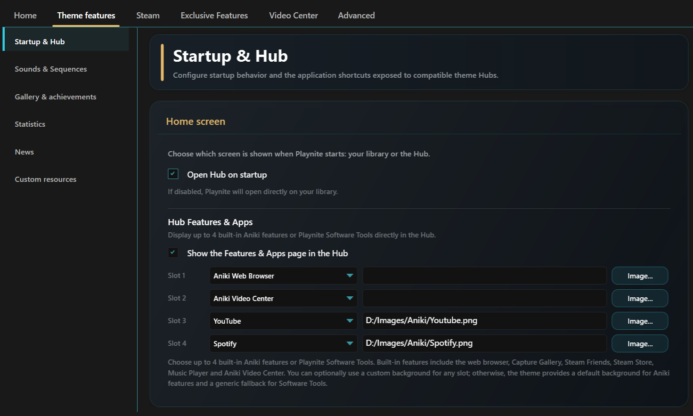

Hub, Quick Access & Extra
These are Aniki's main navigation areas outside the normal game list.
What is the top bar?
The top bar is the horizontal navigation bar at the top of the Aniki interface.
In the Library it can contain buttons such as:
- Hub
- view/layout
- Filter
- Search
- Web
Other Aniki pages can show different top-bar sections.
Knowing this name makes the rest of the guide easier to follow.

images/hub-quick-access-and-extra-01.pngOpen the Welcome Hub
From the top bar
From the Library:
- Move the focus to the top bar.
- Select Hub.
- Press A / Select.
The Welcome Hub opens.
Faster controller shortcut
Aniki also shows a Hub controller shortcut in the shortcut legend near the bottom of the Library.
Once you know the shortcut, you can use it instead of moving to the top bar every time.
The Hub contains several sections that can be switched with LB / RB.
Depending on your data and integrations, it can show areas such as:
- Library
- Profile
- Media
- Store
- News
- Web
- Features & Apps

images/hub-quick-access-and-extra-02.pngStart on the Hub automatically
- Open Playnite Desktop.
- Press F9.
- Open Extension settings → Generic → Aniki Helper.
- Open Theme features → Startup & Hub.
- Enable Open Hub on startup.
- Save.
Disable it if you prefer to start directly on the Library.
Configure Features & Apps
The Hub can expose up to four selected Aniki features or Playnite Software Tools.
- Open
Aniki Helper → Theme features → Startup & Hub. - Enable Show the Features & Apps page in the Hub.
- Choose an item for Slot 1.
- Repeat for Slots 2–4 as needed.
- Optionally choose a custom image for a slot.
- Save.
Built-in choices can include:
- Aniki Web Browser
- Capture Gallery
- Steam Friends
- Steam Store
- Music Player
- Aniki Video Center
You can also choose configured Playnite Software Tools.

images/hub-quick-access-and-extra-03.pngOpen Quick Access
From the Library or Hub:
- Press Start / Menu.
- The left-side Quick Access panel opens.
- Use the D-pad/left stick to select an item.
- Press A to open it.
- Press B to go back.
Quick Access can contain entries such as:
- Profile
- Notifications
- Friends
- Achievements
- Extras
- News
- Steam Store
- Lock Screen
- Help and Support
- Settings
- Power
Some items only appear when their required feature/add-on is available.
What is Extras?
Extras groups secondary Aniki tools so the main Quick Access list stays manageable.
To open it:
- Press Start / Menu.
- Select Extras.
It can contain:
- Aniki Web Browser
- Capture Gallery
- Aniki Video Center
- Music Player
- Software Tools
- Audio Switcher
- What's New
- Relaunch setup assistant
- Gamepad Tester
Open Quick Options
Quick Options is the right-side Control Center for fast changes.
Use the hold shortcut shown by Aniki from the main interface.
Then use LB / RB to switch sections.
Use Quick Options for fast changes while staying in Fullscreen.
Use full Settings → Customization when you want the complete set of theme options.